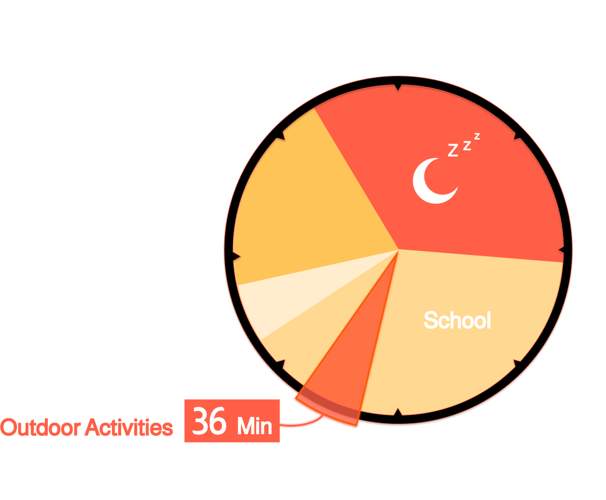
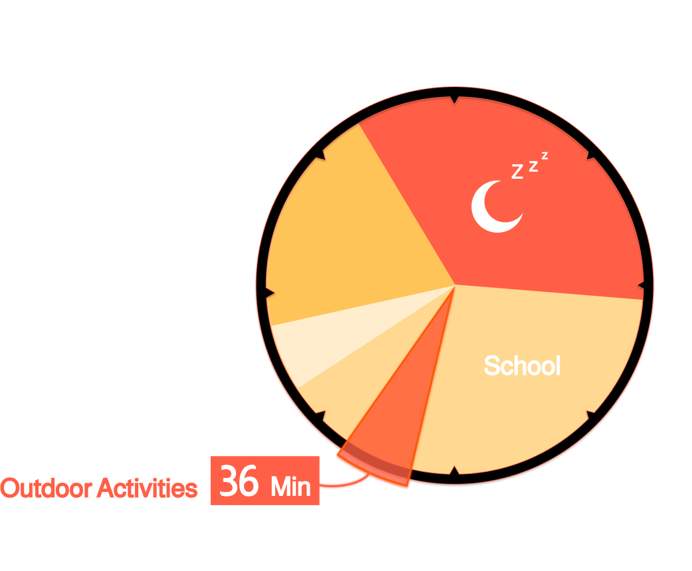

아이들은 환경 문제의 근본적인 원인이나
복잡한 해결책에 대한 이해에 어려움
오염을 단순히 ‘길에 쓰레기를 버리는 행위’로만 이해하는 경향이 있으며,
‘산업 생산, 에너지 소비’와 같은 복합적 문제에 대한 이해에 어려움을 겪고 있습니다.
또한 자신의 일상 행동이 환경에 미치는 광범위한 영향을 연결 짓기 어려워하고 있습니다.
환경 문제에 대한 아이들의 ‘인식 - 행동 격차’ 발생
실제 행동으로 옮기는 데에는 부족함이 발생하며,
인식·행동 격차라는 문제가 나타나고 있습니다.
이는 행동에 기억할 수 있는 경험이 부족하거나,
환경 인프라의 부족,
혹은 공동체의 부재 등 여러 요인에서 비롯되고 있습니다.
따라서 환경 교육은 단순히 지식 전달을 넘어,
학생들이 경험 중심의 의무적/자발적 프로그램에 참여하고,
구체적인 행동을 실천하도록 돕는데 초점을 맞춰야합니다.

 



아이들이 환경 문제의 심각성(93%)은 인지하지만, 부족한 야외 활동과 체험 기회로 인해 인식과 실천 사이의 격차가 발생하고 있습니다.
따라서 환경을 놀이처럼 체감하고, 능동적인 실천 감각을 키울 수 있는 새로운 형태의 교육 변화가 필요하다는 것을 발견했습니다.
From Awareness to Action
아이들이 환경 문제의 심각성(93%)은 인지하지만,
부족한 야외 활동과 체험 기회로 인해 인식과 실천 사이의 격차가 발생하고 있습니다.
따라서 환경을 놀이처럼 체감하고
능동적인 실천 감각을 키울 수 있는 새로운 형태의 교육 변화가 필요하다는 것을 발견했습니다.
Motive of SEEKOO


아이들은 자연을 관찰하며 태양 에너지를 모으고,
다양한 놀이 활동의 움직임을 통해
운동 에너지를 직접 만들어냅니다.
외부에서 생성된 에너지를 실내로 가져오면,
아이들은 본체의 움직임을 활용해 두 에너지를 사용하고 탐험의 경험을 확장하게 됩니다.
아이들은 자연을 관찰 태양 에너지를 모으고,
다양한 놀이 활동의 움직임을 통해 운동 에너지를 만들어냅니다.
외부에서 생성된 에너지를 실내로 가져오면,
아이들은 본체의 움직임을 활용해 두 에너지를 사용하고 탐험의 경험을 확장하게 됩니다.

 는 에너지를 ‘직접 만드는’ 신체놀이로 아이들을 자연 속 ‘탐험가’로 이끌어냅니다.
는 에너지를 ‘직접 만드는’ 신체놀이로 아이들을 자연 속 ‘탐험가’로 이끌어냅니다.
스스로 에너지를 발견하고 만들면서,
환경의 소중함을 체험하고 지속가능한 성장을 이루어갑니다.
 는 에너지를 '직접 만드는' 신체놀이로 아이들을 자연 속 '탐험가'로 이끌어냅니다.
는 에너지를 '직접 만드는' 신체놀이로 아이들을 자연 속 '탐험가'로 이끌어냅니다.
스스로 에너지를 발견하고 만들면서,
환경의 소중함을 체험하고 지속가능한 성장을 이루어갑니다.


제품을 클릭하면 제품 상세 설명으로 넘어갑니다.
Expectation effect of 
Seekoo.는 놀이 기반 교육을 통해 환경 실천을 재미있는 일상 활동으로 만들고,
아이들의 인식·행동 격차를 해소하는 새로운 변화를 제시합니다.
자연 탐험과 신체 활동으로 에너지를 직접 체험하며, 지속가능한 삶의 가치를 내재화하는 성장의 출발점이 될 것입니다.
 는 놀이 기반 교육을 통해 환경 실천을 재미있는 일상 활동으로 만들고,
는 놀이 기반 교육을 통해 환경 실천을 재미있는 일상 활동으로 만들고,
아이들의 인식·행동 격차를 해소하는 새로운 변화를 제시합니다.
자연 탐험과 신체 활동으로 에너지를 직접 체험하며,
지속가능한 삶의 가치를 내재화하는 성장의 출발점이 될 것입니다.